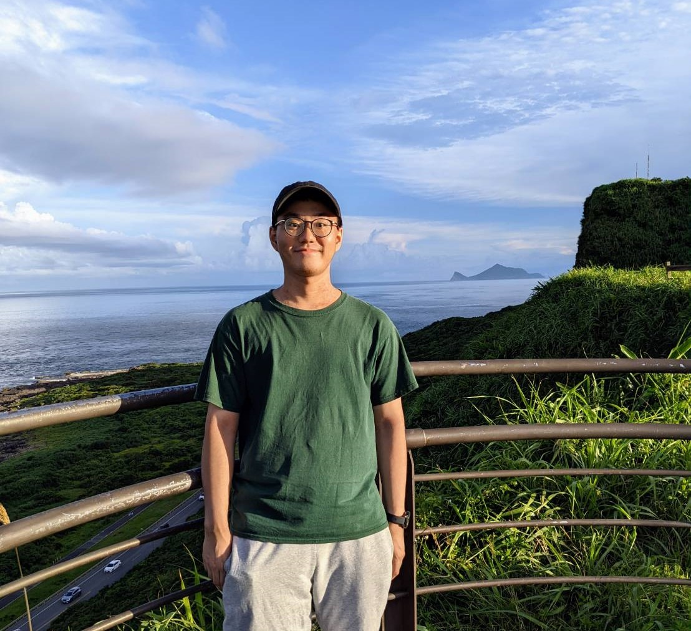

Eric Chang
Earnest Responsible Imaginative Confident

Python, dart, C, Matlab, Java, HTML, Git, SQLite, OpenCV, NumPy, pandas, Keras, Tensorflow, Pytorch
Deep Learning, Computer Vision, IOT, Embedded
Cross Functional Teams, Agile Development & Scrum
Deep Learning(Andrew Ng), Using Databases With Python(UMich), Java Programming Course(NTU)